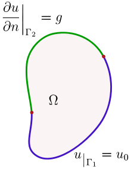

(r) Uniqueness of Helmholtz equation
1. Helmholtz equation
헬름홀쯔 방정식은 아래와 같이 표현할 수 있다.
$$ \left(\nabla^2+k^2\right)\varphi\left(\vec{r}\right)=f\left(\vec{r}\right) $$- 포아송 방정식은 $k^2=0$ 일 때를 의미한다.
- 라플라스 방정식은 $k^2=0$ & $f=0$ 일 때를 의미한다.
2. Weak solution for Poisson’s equation
헬름홀츠 방정식에 대한 해를, $\varphi_1$, $\varphi_2$ 하고, 두 해의 차이를 $\psi=\varphi_1-\varphi_2$ 라고 하자. 이를 헬름홀츠 방정식에 대입하면, 다음과 같다.
$$ \left(\nabla^2+k^2\right)\varphi\left(\vec{r}\right)=0 $$$\psi$가 0임을 보인다면, 해는 유일하다. “약해가 유일하다면, 만약 그 문제에 강해가 존재한다면, 그 강해는 유일한 약해와 같아야 한다.
$$ \int d^3V \left\lbrack\psi^\ast\left(\nabla^2+k^2\right)\psi\right\rbrack=0 $$$$ \int d^3V \left\lbrack\psi^\ast\nabla^2\psi\right\rbrack=\int d^2\vec{s}\cdot\left\lbrack \psi^\ast\nabla\psi\right\rbrack-\int d^3V\left\lbrack \nabla\psi^\ast\cdot\nabla\psi-k^2\left|\psi\right|^2\right\rbrack $$$$ \int d^2\vec{s}\cdot\left\lbrack \psi^\ast\nabla\psi\right\rbrack-\int d^3V \left\lbrack\left|\nabla\psi\right|^2-k^2\left|\psi\right|^2\right\rbrack=0 $$3. Dirichlet boundary condition
경계면에서, 값은 이미 정해져 있으므로,
$$ \psi_S=\varphi_{1S}-\varphi_{2S}=0\implies\int d^2\vec{s}\cdot\left\lbrack \psi^\ast\nabla\psi\right\rbrack=0 $$$$ \int d^3V \left\lbrack\left|\nabla\psi\right|^2-k^2\left|\psi\right|^2\right\rbrack=0 $$(1) $\operatorname{Im}k^2\ne0$
$$ \operatorname{Im}\int d^3V \left\lbrack\left|\nabla\psi\right|^2-k^2\left|\psi\right|^2\right\rbrack=0 $$아래와 같이 분리할 수 있다.
$$ \operatorname{Im} \left|\nabla\psi\right|^2=0 $$$$ \operatorname{Im} k^2\left|\psi\right|^2=\left|\psi\right|^2\operatorname{Im} k^2=0 $$따라서,
$$ \psi=0 $$해는 유일하다.
(2) $\operatorname{Im}k^2=0$
$k^2$ 이 실수인 경우, $\nabla\psi=\pm k\psi$ 이다. 이 때, $\psi$ 는 exponetial 함수로 표현된다. 디레클레 경계에서, $\psi_S=0$ 일 수 밖에 없으므로, $\psi=0$ 이어야야만 한다. 따라서, 해는 유일하다.
4. Neumann boundary condition
경계면에서,
$$ \hat{n}\cdot\nabla\varphi_1=\hat{n}\cdot\nabla\varphi_2 $$$$ \hat{n}\cdot\nabla\psi_S=0\implies\int d^2\vec{s}\cdot\left\lbrack \psi^\ast\nabla\psi\right\rbrack=0 $$$$ \int d^3V \left\lbrack\left|\nabla\psi\right|^2-k^2\left|\psi\right|^2\right\rbrack=0 $$(1) $\operatorname{Im}k^2\ne0$
$$ \operatorname{Im}\int d^3V \left\lbrack\left|\nabla\psi\right|^2-k^2\left|\psi\right|^2\right\rbrack=0 $$아래와 같이 분리할 수 있다.
$$ \operatorname{Im} \left|\nabla\psi\right|^2=0 $$$$ \operatorname{Im} k^2\left|\psi\right|^2=\left|\psi\right|^2\operatorname{Im} k^2=0 $$따라서,
$$ \psi=0 $$해는 유일하다.
(2) $\operatorname{Im}k^2=0$
$k^2$ 이 실수인 경우, $\nabla\psi=\pm k\psi$ 이다. 이 때, $\psi$ 는 exponetial 함수로 표현된다. 노이만 경계에서, $\nabla\psi_S=0$ 일 수 밖에 없다. 따라서, $\psi=C$ 상수로 표현되므로, 해는 유일하지 않다.
5. Mixed boundary condition
 $$ \psi_{\Gamma_1}=\varphi_{1,\Gamma_1}-\varphi_{2,\Gamma_1}=0 $$$$ \hat{n}\cdot\nabla\varphi_{1,\Gamma_2}=\hat{n}\cdot\nabla\varphi_{2,\Gamma_2}\implies\hat{n}\cdot\nabla\psi_{\Gamma_2}=0 $$이것은 다음을 의미한다.
$$ \int d^2\vec{s}\cdot\left\lbrack \psi^\ast\nabla\psi\right\rbrack=0 $$$$ \int d^3V \left\lbrack\left|\nabla\psi\right|^2-k^2\left|\psi\right|^2\right\rbrack=0 $$(1) $\operatorname{Im}k^2\ne0$
$$ \operatorname{Im}\int d^3V \left\lbrack\left|\nabla\psi\right|^2-k^2\left|\psi\right|^2\right\rbrack=0 $$아래와 같이 분리할 수 있다.
$$ \operatorname{Im} \left|\nabla\psi\right|^2=0 $$$$ \operatorname{Im} k^2\left|\psi\right|^2=\left|\psi\right|^2\operatorname{Im} k^2=0 $$따라서,
$$ \psi=0 $$해는 유일하다.
(2) $\operatorname{Im}k^2=0$
노이만 경계조건 뿐만아니라, 디레클레 경계조건도 만족해야 하므로,
$$ \psi=0 $$따라서, 해는 유일하다.